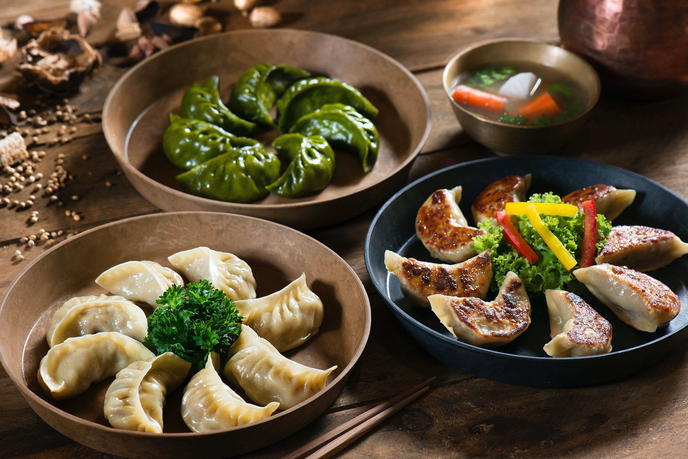

Momo

Description
Momo is a type of steamed filled dumpling in Nepali cuisine. Momo are
usually served with a sauce known as achar influenced by the spices and
herbs used within many South Asian cuisines.
It can also be cooked as soup versions known as jhol momo where the broth
is made from achar using a mixture of tomatoes, sesame seeds, chillies,
cumin and coriander mixed with various herbs and vegetables.
Ingredients
Dough Wrapper
- 4 cups all-purpose flour
- 1 tablespoon oil water, as required
- 1 pinch salt
Filling
-
2 lbs lean ground meat (50% lamb or chicken & 50% pork works best)
- 1 cup red onion, finely chopped
- 1/2 cup green onion, finely chopped
- 1 cup ripe tomatoes, finely chpped
- 3 tablespoons fresh cilantro, chopped
- 1 tablespoon fresh garlic, minced
- 1 tablespoon fresh ginger, minced
- 1/4 teaspoon nutmeg, freshly grated
- 1/2 teaspoon turmeric
- 1 tablespoon curry powder, or momo masala if available
- 3 fresh red chilies, minced (or to taste)
- 3 tablespoons cooking oil
- salt per taste
- 1/2 tablespoons pepper
Steps
- Dough: In a large bowl combine flour, oil, salt and water.
-
Mix well, knead until the dough becomes homogeneous in texture, about
8-10 minute.
- Cover and let stand for at least 30 minute.
- Knead well again before making wrappers.
- Filling: In a large bowl combine all filling ingredients.
- Mix well, adjust for seasoning with salt and pepper.
-
Cover and refrigerate for at least an hour to allow all ingredients to
impart their unique flavors.
- This also improves the consistency of the filling.
- Give the dough a final knead.
- Prepare 1-in. dough balls.
- Take a ball, roll between your palms to spherical shape.
- Dust working board with dry flour.
-
On the board gently flatten the ball with your palm to about 2-in
circle.
- Make a few semi-flattened circles, cover with a bowl.
-
Use a rolling pin to roll out each flattened circle into a wrapper.
-
For well executed MOMO's, it is essential that the middle portion of the
wrapper be slightly thicker than the edges to ensure the structural
integrity of dumplings during packing and steaming.
-
Hold the edges of the semi-flattened dough with one hand and with the
other hand begin rolling the edges of the dough out, swirling a bit at a
time.
- Continue until the wrapper attains 3-in diameter circular shape.
- Repeat with the remaining semi-flattened dough circles.
- Cover with bowl to prevent from drying.
-
For packing hold wrapper on one palm, put one tablespoon of filling
mixture and with the other hand bring all edges together to the center,
making the pleats.
-
Pinch and twist the pleats to ensure the absolute closure of the stuffed
dumpling.
- This holds the key to good tasting, juicy dumplings.
- Heat up a steamer, oil the steamer rack well.
- This is critical because it will prevent dumplings from sticking.
- Arrange uncooked dumplings in the steamer.
-
Close the lid, and allow steaming until the dumplings are cooked
through, about 10 minutes.
- Take dumplings off the steamer and serve immediately.
-
Alternatively, you can place uncooked dumplings directly in slightly
salted boiling water and cook until done, approximately 10 minutes. Be
careful not to over boil the dumplings.
-
You may also slightly sauté cooked dumplings in butter before serving.
-
To serve, arrange the cooked dumplings (MOMO's) on serving plate with
hot tomato achar or any other chutneys as condiment.